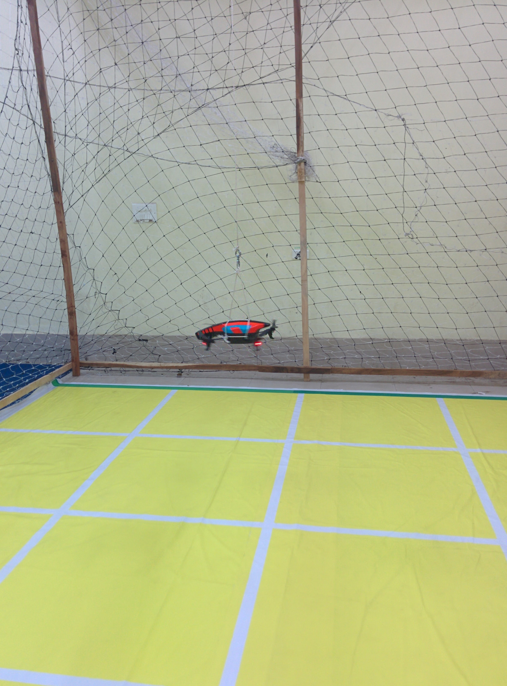

Our Projects

Overall
ARK aims to develop a flexible aerial robotics framework which can be easily used to control
aerial
vehicles. Eventually, we want to move to multiple decentralised aerial robot swarms in an
outdoors
setting.
Currently, we have designed an architecture for IARC which we plan to optimise iteratively for
participation.
Software
The software team is responsible for developing algorithms in computer vision including localisation, object detection, tracking, path planning and 3D obstacle avoidance along with artifical intelligence algorithms for exploration and herding. Current Areas of focus are:
Object Detection and Tracking
Object detection and tracking is widely used with applications in monitoring and surveillance. In IARC, the task requires us to guide ground robots towards a line. We plan to use a fisheye lens to see the whole arena and then track the ground robots, maintaining the trackers even when they are out of field of view. We are using Kalman filter for the tracking on the linear model of motion of the ground robots.

Grid Based Localization
IARC is held in an indoor GPS denied environment so localization is a major challenge. IARC provides grids on the ground which can be detected and used to localize.
Herding
IARC has an interesting AI aspect in it's problem statement which is to herd robots past the green line and avoid them crossing the red line. This brings an additional constraint of targetting the robots moving towards red line first and optimizing the attack behavior so that maximum robots can be herded across the line.

Control
The Controls Team aims towards a smooth motion of the aerial robot in space and that they attain the desired speed and orientation avoiding obstacles. Current research includes:
Two Layered PID
An aerial robot can control it's position in the form of roll. pitch and yaw but in the world frame, It gets an input or feed back in the form of X,Y and Z. So, a cascaded PID with self adjusting gains and parameters is the direction towards which we are working. We have got a naive PID over RPY and XYZ working on AR Drone and are working to shift to self-adjusting parameters.